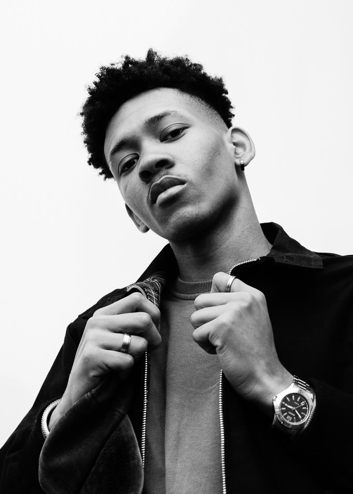
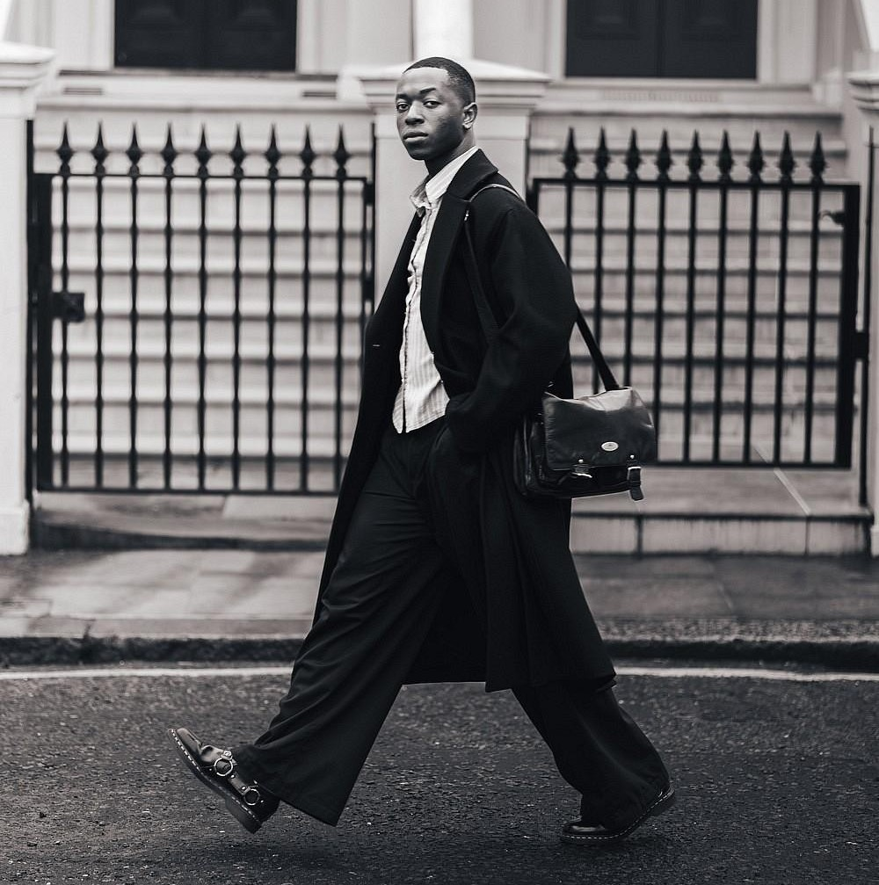

004 / BODY LANGUAGE
PRESENCE / MOVEMENT / CONFIDENCE
SAY IT
WITHOUT
WORDS.
Before you speak, your body has already started communicating.
The way you stand, walk, look at people and occupy space can influence how confident, comfortable and approachable you appear.

THE BASICS
LOOK
COMPOSED.
Good body language isn't about acting confident. It's about looking comfortable in your own body.
Avoid forcing exaggerated poses or constantly trying to appear dominant. Natural, controlled movements usually communicate more confidence than dramatic ones.
THE WAY YOU MOVE.
POSTURE
Keep your head neutral, shoulders relaxed and torso naturally upright. Good posture makes your movements look more deliberate.
EYE CONTACT
Look at people when they are speaking to you. Comfortable eye contact shows attention without requiring an intense or forced stare.
MOVEMENT
Avoid constantly fidgeting or rushing your movements. Slower, controlled gestures can make you appear calmer and more composed.
SPACE
Give people appropriate personal space while remaining open and relaxed. Confidence doesn't require constantly trying to dominate a room.

MOVEMENT
WALK
WITH
INTENTION.
A confident walk doesn't need to be exaggerated. Keep a comfortable pace, let your arms move naturally and avoid constantly looking at the ground.
The goal is simple: move as though you have somewhere to be, without looking like you're in a hurry.
QUICK CHECK / 04
BEFORE
YOU ENTER.
A few small adjustments can change the way you carry yourself before you even say a word.
HEAD
UP.
Keep your head neutral and your eyes naturally forward. Don't stare at the floor.
SHOULDERS
OPEN.
Let your shoulders sit naturally instead of pulling them aggressively backward.
MOVE
SLOW.
Don't rush your steps or gestures. Controlled movement looks more composed.
LOOK
UP.
Make comfortable eye contact when speaking or listening, then naturally look away.
PRESENCE
CONFIDENCE
SHOULD LOOK
EFFORTLESS.
DON'T PERFORM CONFIDENCE.
BECOME COMFORTABLE.